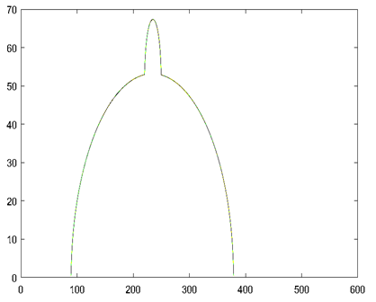
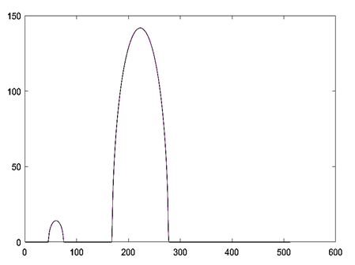
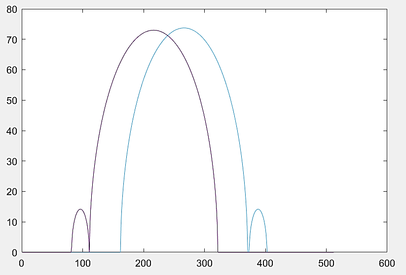
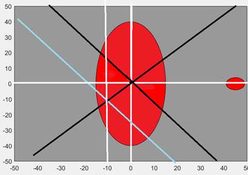
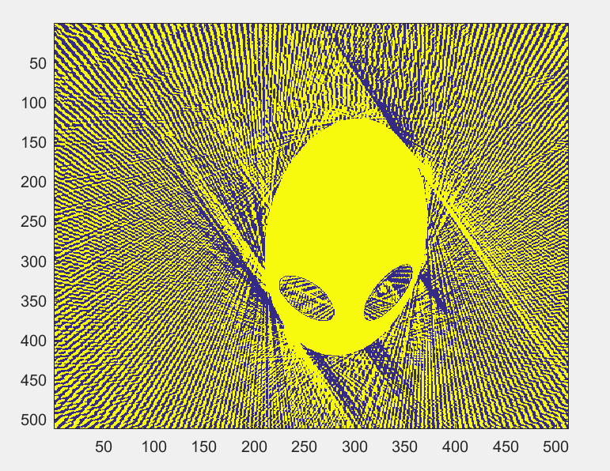
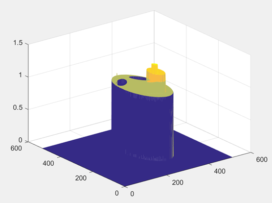
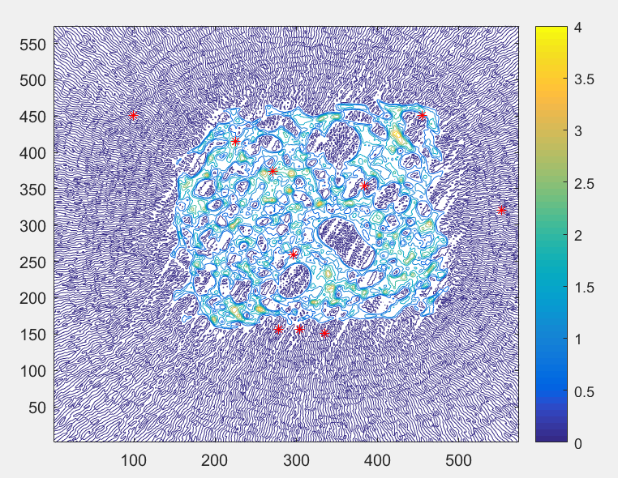

CUMCM 2017-CT technology reconstruction image
| Title | Time | Rank |
|---|---|---|
| CUMCM[^2] | 2017 | Provincial first place |
[^2]: China Undergraduate Mathematical Contest in Modeling
Solving problems and difficulties encountered
- Through the CT scan data, using the geometric analysis method, the corresponding scan images of the CT system are obtained, and the parameters of the CT system are given, such as the distance of the detector units, the coordinates of the rotation centre and 180 rotation directions
- According to the acceptance information of an unknown medium obtained by the CT system, use the calibration parameters obtained in the first question, use MATLAB to draw a graph for data analysis, and use Radon transform to reconstruct the image to determine the unknown medium in the square tray. The unknown, geometric shape, and then use the properties of the Radon transform to obtain the absorption rate of the object
- In the Radon transform, use the interpolation function for image fitting, and then use hamming to reduce noise
- New model, three circle model
Model framework and solutions
Geometric Analysis:
- Take a special position to get the basic shape of the graph, such as analyzing the length and width through the highest and lowest values
|  |  |
|---|
Obtain the geometric centre by the symmetry method, and use the symmetry method to obtain the intersection of the two intersecting lines, which is the centre of the rotating body
  By combining the obtained graph with the linear equation corresponding to the data, 180 angles can be obtained by solving 180 equations with different parameters
Radon transformation:
- When a function has a finite value in a finite region and other values are zero, and the integral of the function on all paths passing through this region is known, then the value of this function in this region can be uniquely determined, and this function and Its related line integrals form a pair of transformations. This transformation is called the Radon transform, and the process of deriving the function from the function Radon transform is called the inverse Radon transform.
- For this question, we can get the final image by directly substituting the data into the Radon transform function of MATLAB
- To make the image more accurate, we will consider using the spline function for interpolation to make the data smoother
- To avoid the artefact after the Radon transform, we consider filtering the function
- This is a method learned in the literature, the specific steps of the filter back-projection algorithm implementation
- Do a one-dimensional Fourier transform on the projection data at a certain angle and multiply it by a weight factor
- Perform a one-dimensional inverse Fourier transform on the result of the previous step
- Calculate the direct back projection of all the corrected projection functions from 0 to 180 degrees to get the image
- Similar to 2D principles
  
New solution method (three-circle model)
- Three circles on the endpoints of an equilateral triangle, when selecting the initial angle, take three straight lines, and ensure that each of these three only passes through one circle
- These three straight lines are a group of straight lines, and their spacing can be represented by the distance of the unit circle. Let one of the straight lines be y=kx+b, and the other two can be easily represented, so there are three unknowns, and then according to The distance obtained by the circular interception of each straight line constructs three equations, that is, the exact solution can be obtained, and when the exact solution is obtained, assuming that the angle of each rotation is 1, the centre of rotation can be obtained by using the Radon transform, and then After obtaining these parameters, the Radon transform can be used to obtain a more accurate image
Innovation
- Geometric Analysis
- Radon transform and three-circle model